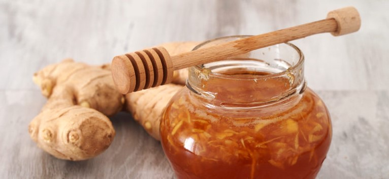

Beneficiile mierii de albine cu ghimbir

Mierea cu ghimbir poate trata problemele respiratorii, astmul, întărește imunitatea.
Mierea cu ghimbir pentru tratarea problemelor respiratorii este de neegalat de orice altă combinație.Ele ajută la îmbunătățirea circulației sângelui, întăresc imunitatea și tratează problemele respiratorii și cancerul.
În plus, mierea este un mediu excelent pentru transmiterea beneficiilor ghimbirului în organism.Ambele, mierea și ghimbirul, au propriile beneficii individuale pentru sănătate, iar combinația celor două oferă bonusuri suplimentare.
Beneficiile pentru sănătate includ următoarele:
Tratează astmul
Se crede că mierea cu ghimbir este capabilă să trateze sau să reducă efectele astmului.
Este un amestec natural calmant și antiinflamator, care eliberează tensiunea, promovează fluxul de oxigen în plămâni și ajută la relaxarea vaselor de sânge.
Reduce problemele respiratorii
Mierea cu ghimbir este un expectorant excelent și, prin urmare, oferă o ameliorare instantanee în tuse, răceală, dureri în gât și un nas care curge.
Ajută la minimizarea efectele secundare ale chimioterapiei
Ghimbirul a fost asociat cu o reducere a grețurilor și a vărsăturilor asociate cu tratamentul cancerului și chimioterapiei.
Pacienții suferă adesea de greață debilitantă în urma acestor proceduri intense și se îndreaptă spre soluții alternative pentru ao elimina.
El accelerează golirea stomacului prin proprietățile sale digestive, care pot preveni disconfortul și probabilitatea de greață.
Greața cauzată de chimioterapie este cauzată de cisplatină, o componentă principală de chimioterapie, iar ghimbirul poate echilibra acest lucru cu efectele sale puternice.
A fost, de asemenea, legat pozitiv cu reducerea grețurilor și a vărsăturilor asociate cu sarcina și greața de dimineață.
Acest lucru, combinat cu efectele naturale calmante ale mierii, face o soluție puternică de prevenire a vărsăturilor și greațelor cauzate de diverse surse.
Ajută digestia
Se crede că mierea și ghimbirul sunt un bun ajutor digestiv datorită proprietăților digestive inerente ale ghimbirului.
În plus, ambele au proprietăți antioxidante, îmbunătățind astfel imunitatea organismului.
Prin urmare, consumul unei lingurițe de ghimbir și miere este foarte utilă pentru persoanele care au un sistem digestiv slab.
Tonicul de miere și ghimbir are un nivel ridicat de proteine, care ajută în procesul digestiv, și stimulează secreția de bilă, care ajută la dizolvarea de grăsime.
Mai mult, stimulează creșterea florei intestinale, care accelerează procesul digestiv și facilitează mișcările intestinale corespunzătoare.
În cele din urmă, acest lucru conferă capacitatea de a crește absorbția altor nutrienți din alimente.
Protejează sănătatea inimii
Proprietățile antioxidante ale tonicului cu miere și ghimbir s-au dovedit a fi moderate în comportamentul prostaglandinei în organism.
Prostaglandinele sunt compuși lipidici care sunt derivați enzimatic din acizi grași, prezenți în ghimbir.
Aceste prostaglandine se găsesc pe tot corpul și sunt elemente funcționale în aproape toate sistemele de organe.
În ceea ce privește sănătatea inimii, efectele moderatorii ale tonicului au aratat tendința de a calma tensiunea vaselor sangvine.
Astfel se reduce tensiunea arterială și șansele unor afecțiuni cum ar fi ateroscleroza, infarctul miocardic și accidentele vasculare cerebrale.
Oamenii din întreaga lume, în special în India, păstrează mereu tonicul de ghimbir și miere în casele lor împotriva frigului sau tusei.
 Livrarea este disponibilă doar în București și Ilfov. Livrarea se face în maxim 48 de ore. Puncte de ridicare comandă în București și Slatina.
Livrarea este disponibilă doar în București și Ilfov. Livrarea se face în maxim 48 de ore. Puncte de ridicare comandă în București și Slatina.